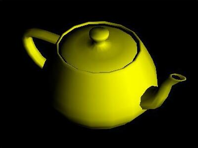
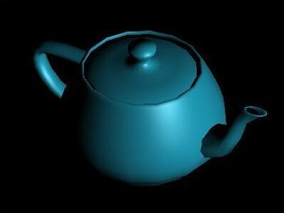

模型 Model
使用常见几何体组合复杂的模型会比较麻烦，可以先通过3dx Max等工具制作三维模型，然后导入到ThreeJS的场景中
导入模型需要相应的加载器，例如：
3MFLoader.js 导入.3mf格式的3D文件
OBJLoader.js 导入.obj格式的3D文件
MTLLoader.js 导入.mtl格式的材质文件
推荐使用glTF模型
Where possible, we recommend using glTF (GL Transmission Format). Both .GLB and .GLTF versions of the format are well supported. Because glTF is focused on runtime asset delivery, it is compact to transmit and fast to load. Features include meshes, materials, textures, skins, skeletons, morph targets, animations, lights, and cameras.
使用3dx Max制作模型，在导出*.obj时可选择是否带材质*.mtl

使用OBJLoader导入不带材质的模型

导入不带材质的模型后，可在代码中另设置其材质

使用MTLLoader和OBJMTLLoader导入带材质的模型
